(转)内存的工作原理及时序介绍
内存是PC配件中结构最简单的，但在BIOS中却是最难调的，很多玩家超频都卡在内存上。
并且，内存的原理、结构与时序多年不会改变，无论将来内存技术如何进步，相信这篇文章的存在价值都不会打折扣。
本文亦希望能通过对DRAM基本原理以及时序的介绍，在内存设置以及XMP的制作上有所帮助。
目录
第一部分：工作原理
- DRAM基本组成
- 内存地址
- 寻址
- 内存cell的基本操作
- 硅晶体中的“电容”
- MOSFET的控制原理——水库模型
- 储存数据
- 写入数据
- 读取数据
第二部分：时序介绍
- 时序及相关概念
- 第一时序
- 第二时序
- 结语
正文
第一部分：工作原理
DRAM基本组成
内存是由DRAM（动态随机存储器）芯片组成的。DRAM的内部结构可以说是PC芯片中最简单的，是由许多重复的“单元”——cell组成，
每一个cell由一个电容和一个晶体管（一般是N沟道MOSFET）构成，电容可储存1bit数据量，充放电后电荷的多少（电势高低）分别对应二进制数据0和1。
由于电容会有漏电现象，因此过一段时间之后电荷会丢失，导致电势不足而丢失数据，
因此必须经常进行充电保持电势，这个充电的动作叫做刷新，因此动态存储器具有刷新特性，这个刷新的操作一直要持续到数据改变或者断电。
而MOSFET则是控制电容充放电的开关。DRAM由于结构简单，可以做到面积很小，存储容量很大。
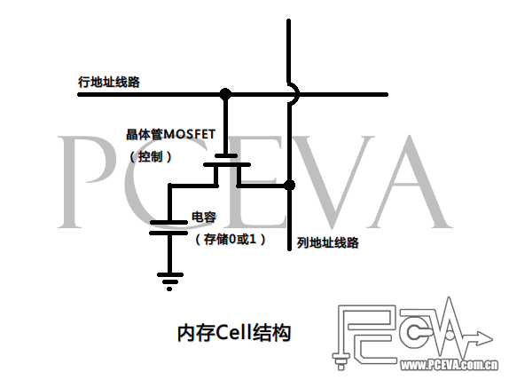
内存地址
内存中的cell按矩阵形排列，每一行和每一列都会有一个对应的行地址线路（正规叫法叫做word line）和列地址线路（正规叫法是bit line），
每个具体的cell就挂接在这样的行地址线路和列地址线路上，对应一个唯一的行号和列号，把行号和列号组合在一起，就是内存的地址。
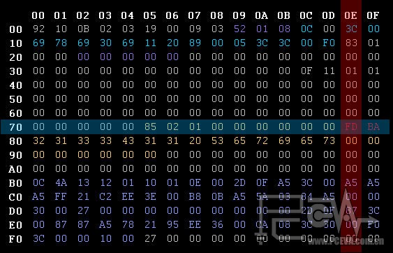
上图是Thaiphoon Burner的一个SPD dump，每个地址是一个字节。
不过我们可以把这些数据假设成只有一个bit，当成是一个简单的内存地址表，左边竖着的是行地址，上方横着的是列地址。
例如我们要找第七行、倒数第二列（地址为7E）的数据，它就只有一个对应的值：FD。当然了，在内存的cell中，它只能是0或者1。
寻址
数据要写入内存的一个cell，或者从内存中的一个cell读取数据，首先要完成对这个cell的寻址。
寻址的过程，首先是将需要操作的cell的对应行地址信号和列地址信号输入行/列地址缓冲器，
然后先通过行解码器（Row Decoder）选择特定的行地址线路，以激活特定的行地址。
每一条行地址线路会与多条列地址线路和cell相连接，为了侦测列地址线路上微弱的激活信号，
还需要一个额外的感应放大器（Sense Amplifier）放大这个信号。
当行激活之后，列地址缓冲器中的列地址信号通过列解码器（Column Decoder）确定列地址，
并被对应的感应放大器通过连接IO线路，这样cell就被激活，并可供读写操作，寻址完成。
从行地址激活，到找到列地址这段时间，就是tRCD。
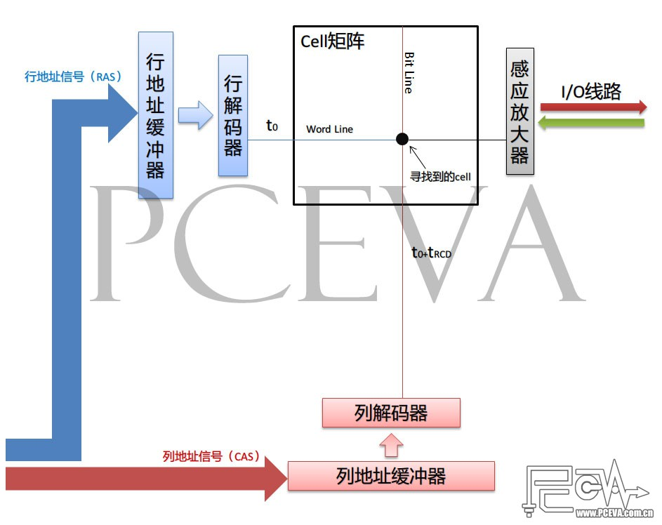
内存cell的基本操作
内存中的cell可以分为3个基本操作，数据的储存、写入与读取。
为了便于理解，我不打算直接从电路控制上对cell操作进行说明，而是希望通过模型类比来达到说明问题的目的，如有不严谨之处，高手勿怪。
要对内存cell进行读写操作，首先要完成上述寻址过程，并且电容的充电状态信号要被感应放大器感应到，
并且放大，然后MOSFET打开，电容放电，产生电势变化，把电荷输送到IO线路，导致线路的电势也变化。
当然，这只是个简单的描述，以下我们先来了解硅晶体中“电容”的结构和MOSFET的控制原理。
硅晶体中的“电容”
这里之所以“电容”两个字被打上引号，是因为硅晶体中并没有真正意义上的电容。
硅晶体中的电容是由两个对置的触发器组成的等效电容。例如两个非门（Nor Gate）用如下图的方式对接。
它可以通过周期性施加特定的输入信号，以把电荷保留在电路中，充当电容的作用。
如下图，两个非门的输入端R和S互相交替做0和1输入，就可以把电荷储存在电路中。整个动态过程就是这样：
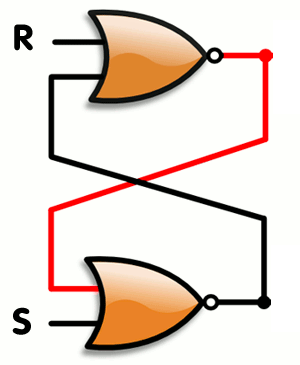
而R和S的波形就是如下图所示，刚好互为反相，差半个周期：
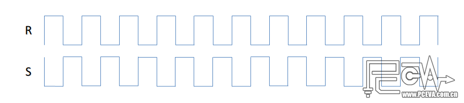
要让电容放电，我们只需要把R和S同时输入1或者0即可。因此这种电容的逻辑关系很简单：
在同一时刻R和S输入状态不同（即存在电势差）时，电容为充电状态；
在同一时刻R和S输入状态相同（即电势差为0）时，电容为放电状态。
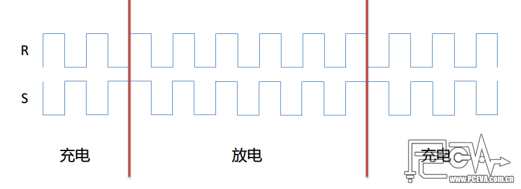
MOSFET的控制原理——水库模型
要说明这个MOSFET的控制原理，我们借助一个水库的模型来说明。
MOSFET有三个极，分别是源极（Source）、漏极（Drain）和栅极（Gate）。
下图左边就是一个MOSFET的电路图，下边是我们画出的一个水库模型。
图中S为源极，D为漏极，G为栅极。
S极连接着电容，D级连接列地址线路，并接到数据IO，G则是控制电荷流出的阀门，连接行地址线路。
电容在充电后电势会改变，这样S极的电势就会跟着改变，与D极形成电势差，而G极的电势，就决定了S极有多少电荷可以流入D极。
由于电子是带负电荷，因此电子越多电势就越低。为了不至于混淆概念，
我们把水池顶部电势定为0V，水池底部电势定为5V（仅举例说明，DRAM中的电容实际电压未必是5V）。
当电子数量越多时，电势越低，接近0V，电子数量越少时，电势越高，接近5V。
用水库模型说明，就是左边的水池水量升高（电容充电后），当阀门关闭时，左边的水是不会往右边流的。
然后阀门打开（降低，电势升高），左边的水就可以往右边流，阀门的高度就决定了有多少水能流去右边的水道
（但是在数字电路中，MOSFET只有开和关两种状态，因此下文提到的打开MOSFET就是全开）；
同样道理如果右边水多，阀门打开之后也可以向左边流。因此在水库模型中，电容就充当了左边的水池，
而MOSFET的栅极就充当了阀门，列地址线路和IO则充当了右边的水道。
储存数据
MOSFET栅极电势为0V时，电容的电荷不会流出，因此数据就可以保存我们可以用2.5V为参考分界线，
电容电势低于2.5V时，表示数据0，电势高于2.5V时，表示数据1。例如上一楼水库模型的左图，
电容中储存的电子数高于一半的高度，电势低于2.5V，因此可以表示数据0。
但以上只是理论情况，实际上电容会自然漏电，电子数量会逐渐减少，电势就会逐渐升高，
当电势升高到2.5V以上时，数据就会出错，因此每隔一段时间必须打开MOSFET往电容中充电，以保持电势，
这就是刷新。因此，数据的储存主要就是对电容中电势的保持操作。
写入数据
数据写入的操作分为写入0和写入1两种情况。写入前，电容原有的情况可能是高电势与低电势的状态，
我们不用管它。写入0和写入1对cell的操作不尽相同，我们分别来看。
先来看写入0的操作。写入开始时，IO线路上电势为0（水道处于水位最高点），MOSFET栅极电势升高到5V（水库阀门降到最低），
阀门打开，电容中的电势就跟着降低（水位升高），直到接近0V（水池被灌满），写入0完成，栅极电势降回0V，阀门关闭。
再看写入1的操作。写入开始时，IO线路上的电势为5V（水道水位为最低点），MOSFET栅极电势升高到5V（水库阀门降到最低），
阀门打开，电容中的电势跟着升高（水流出并降低水位）到接近5V，写入1完成，栅极电势回到0V，阀门关闭。
读取数据
读取的时候，对漏极的电压操作跟写入有些不同。因为水道中的水比水池中的多，或者说水道的容量比水池要大得多。
如果水道（漏极）的水为满或者空，在阀门打开的时候很容易出现水道的水倒灌进水池的现象，或是水池的水全部流去水道，
这样就有可能导致电容中的电势状态改变，电容对应储存的0或者1也会改变。
所以读取数据的时候，IO线路的电压应为1/2的满电势，即2.5V。
读取也同样分读取0和1两种情况。在读取之前，电容中的电势应该是大于或者小于2.5V的，分别代表存储了1和0。
由于刷新机制的存在，应该不会允许出现等于2.5V的情况。
首先看读取0操作。电容中为低电势（假设为0V，水池为高水位），IO线路上电势升高至2.5V（这时水道水位比水池低），
MOSFET栅极电势升高到5V（水库阀门降到最低），阀门打开，电容中电势升高（水位降低），
但由于水道容量较大，因此水位不会升高太多，但是总归也会有个电势的变低，
最终电容与IO线路上的电势都变成0-2.5V的一个中间值，并且接近2.5V（假设为2.3V）。
这时候感应放大器检测到IO线路上电势低于2.5V，因此识别出0读出。
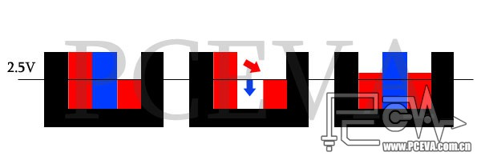
再看读取1操作。电容中为高电势（假设为5V，水池空），IO线路上电势升高至2.5V（这时候水道水位比水池高），
MOSFET栅极电势升高到5V（水库阀门降到最低），阀门打开，电容中电势降低（水位升高），
但由于水道容量较大，水位不会降低太多，不过多少也会降低一点（电势会升高），假设升高到2.7V。
这时候感应放大器检测到IO线路的电势高于2.5V，识别出1读出。
以上讲述的只是从cell到内存IO线路的读写操作，至于CPU-IMC-内存的读写操作，不在本文讨论范围。
第二部分：时序介绍
时序及相关概念
以下我把时序分为两部分，只是为了下文介绍起来作为归类，非官方分类方法。
第一时序：CL-tRCD-tRP-tRAS-CR，就是我们常说的5个主要时序。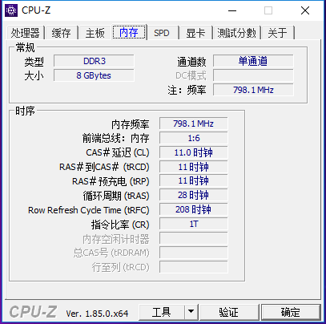
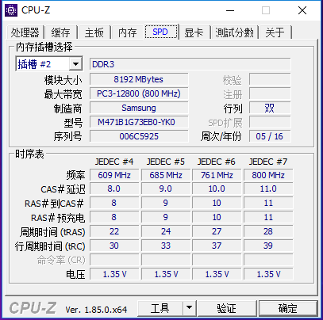
第二时序：（包含所有XMP时序）
在讲时序之前，我想先让大家明白一些概念。
内存时钟信号是方波，DDR内存在时钟信号上升和下降时各进行一次数据传输，所以会有等效两倍传输率的关系。
例如DDR3-1333的实际工作频率是666.7MHz，每秒传输数据666.7*2=1333百万次，即1333MT/s，
也就是我们说的等效频率1333MHz，再由每条内存位宽是64bit，那么它的带宽就是：1333MT/s*64bit/8（8bit是一字节）=10667MB/s。
所谓时序，就是内存的时钟周期数值，脉冲信号经过上升再下降，到下一次上升之前叫做一个时钟周期，随着内存频率提升，这个周期会变短。
例如CL9的意思就是CL这个操作的时间是9个时钟周期。
另外还要搞清楚一些基本术语：
Cell：颗粒中的一个数据存储单元叫做一个Cell，由一个电容和一个N沟道MOSFET组成。
Bank：8bit的内存颗粒，一个颗粒叫做一个bank，4bit的颗粒，正反两个颗粒合起来叫做一个bank。
一根内存是64bit，如果是单面就是8个8bit颗粒，如果是双面，那就是16个4bit的颗粒分别在两面，不算ECC颗粒。
Rank：内存PCB的一面所有颗粒叫做一个rank，目前在Unbuffered台式机内存上，通常一面是8个颗粒，
所以单面内存就是1个rank，8个bank，双面内存就是2个rank，8个bank。
Bank与rank的定义是SPD信息的一部分，在AIDA64中SPD一栏可以看到。
DIMM：指一条可传输64bit数据的内存PCB，也就是内存颗粒的载体，算上ECC芯片，一条DIMM PCB最多可以容纳18个芯片。
第一时序
CAS Latency（CL）：CAS即Column Address Strobe，列地址信号。
它定义了在读取命令发出后到数据读出到IO接口的间隔时间。
由于CAS在几乎所有的内存读取操作中都会生效（除非是读取到同一行地址中连续的数据，
4bit颗粒直接读取间隔3个地址，8bit颗粒直接读取间隔7个地址，这时候CAS不生效），
因此它是对内存读取性能影响最强的。如下图，蓝色的Read表示读取命令，绿色的方块表示数据读出IO，中间间隔的时间就是CL。
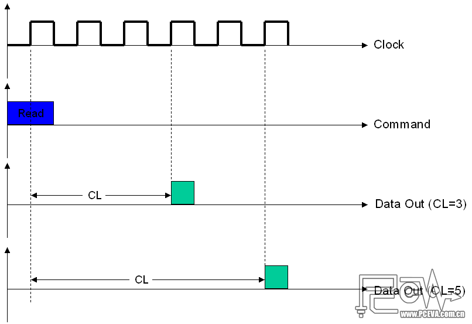
已知CL时钟周期值CAS，我们可以使用以下公式来计算实际延迟时间tCAS：
tCAS（ns）=（CAS*2000）/内存等效频率
例如，DDR3-1333 CL9内存实际CAS延迟时间=（9*2000）/1333=13.50 ns
或者反过来算，假如已知你的内存可以在7.5ns延迟下稳定工作，并且你想要DDR3-2000的频率，
那么你可以把CL值设为8T（实际上8ns，大于7.5ns即可），如果你想要DDR3-1600的频率，那么你的CL值可以设到6T（实际7.5ns）。
这个公式对于所有用时钟周期表示延迟的内存时序都可以用。
说到这个公式，我想顺便说说大家对频率和时序的纠结问题。首先来回顾一下DDR一代到三代的一些典型的JEDEC规范，
并按照上边那个公式算一下它的CL延迟时间：
DDR-400 3-3-3-8：（3*2000）/400=15 ns
DDR2-800 6-6-6-18：（6*2000）/800=15 ns
DDR3-1333 9-9-9-24：刚才算了是13.5 ns
再来看看每一代的超频内存的最佳表现（平民级，非世界纪录）：
DDR1 Winbond BH-5 DDR-500 CL1.5：（1.5*2000）/500=6 ns
DDR2 Micron D9GMH DDR2-1400 CL4：（4*2000）/1400=5.71 ns
DDR3 PSC A3G-A DDR3-2133 CL6：（6*2000）/2133=5.63 ns
发现什么？不管是哪一代内存，随着频率提升，CL周期也同步提升，但是最后算出来的CL延迟时间却差不多。
那么到了DDR4，JEDEC规范频率去到DDR4-4266，如果按照差不多的延迟，那么按照13ns多一些来算，那么CL值将达到28T！
如果按照我们的极限超频延迟来算，DDR4-4266下的延迟也将达到12T。所以到了下一代DDR4，两位数的时钟周期将不可避免。
所以，我想说的是，不要再去想什么DDR3的频率，DDR2的时序，在频宽严重过剩，IMC成为瓶颈的今天，它对性能没太多的提升。
DRAM RAS to CAS Delay（tRCD）：RAS的含义与CAS类似，就是行（Row）地址信号。
它定义的是在内存的一个rank（内存的一面）之中，行地址激活（Active）命令发出之后，内存对行地址的操作所需要的时间。
每一个内存cell就是一个可存储数据的地址，每个地址都有对应的行号和列号，每一行包含1024个列地址，
当某一行地址被激活后，多个CAS请求会被发送以进行读写操作。
简单的说，已知行地址位置，在这一行中找到相应的列地址，就可以完成寻址，进行读写操作，从已知行地址到找到列地址过去的时间就是tRCD。
当内存中某一行地址被激活时，我们称它为“open page”。在同一时刻，同一个rank可以打开8个行地址（8个bank，也就是8个颗粒各一个）。
下图显示一个行地址激活命令发出，到寻找列地址并发出读取指令，中间间隔的时间就是tRCD。
tRCD值由于是最关键的寻址时间，它对内存最大频率影响最大，一般想要上高频，在加电压和放宽CL值不奏效的时候，我们都要放宽这个延迟。
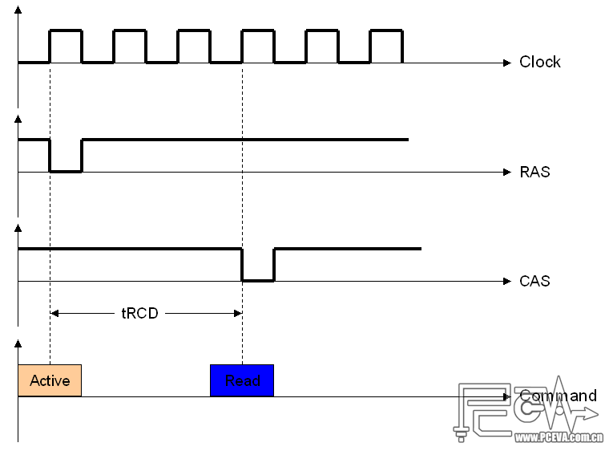
DRAM RAS Precharge Time（tRP）：RAS预充电时间。
它定义的是前一个行地址操作完成并在行地址关闭（page close）命令发出之后，
准备对同一个bank中下一个行地址进行操作，tRP就是下一个行地址激活信号发出前对其进行的预充电时间。
由于在行地址关闭命令发出之前，一个rank中的多个行地址可能正在被读写，tRP对内存性能影响不如CL和tRCD。
虽然tRP的影响会随着多个行地址激活与关闭信号频繁操作一个bank而加大，但是它的影响会被bank interleaving（bank交叉操作）
和command scheduling（命令调配）所削弱。交叉读写会交替使用不同的bank进行读写，减少对一个bank的操作频率；
命令调配则是由CPU多线程访问不同的内存地址，同样是减少对一个bank的频繁操作次数。
例如SNB CPU的内存控制器可以对读写操作命令进行有效地重新分配，以使得行地址激活命中率最大化
（如果重复激活一个已经处于激活状态的行地址，那就是RAS激活命令未命中），
所以tRP在SNB平台对性能的影响不大，并且放宽它有可能可以帮助提升稳定性。
下图显示的是一个即将被激活的行地址开始预充电，到它被激活间隔的时间，就是tRP。
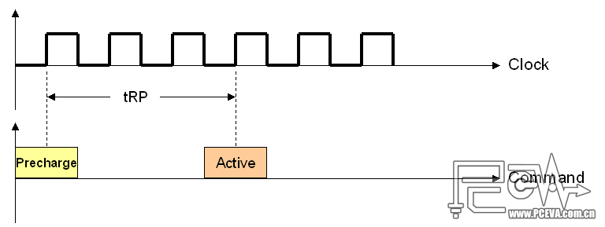
DRAM RAS Active Time（tRAS）：行地址激活的时间。
它其实就是从一个行地址预充电之后，从激活到寻址再到读取完成所经过的整个时间，也就是tRCD+tCL的意思。
这个操作并不会频繁发生，只有在空闲的内存新建数据的时候才会使用它。
太紧的tRAS值，有可能会导致数据丢失或不完整，太宽的值则会影响内存性能，尤其是在内存使用量增加的时候。
所以一般为了稳定性，我们设置tRAS≥tRTP+tRCD+CL即可（tRTP不是tRP，将在第二时序中介绍），
尤其是PCB不好或者跑高频的时候，多几个周期比较稳妥。
DRAM Command Mode（Command Rate，CR）：首命令延迟。
也就是我们平时说的1T/2T模式。是指从选定bank之后到可以发出行地址激活命令所经过的时间。
CR可能对性能的影响有比较大的变数：如果CPU所需要的数据都在内存的一个行地址上，就不需要进行重复多次的bank选择，
CR的影响就很小；但是如果一个rank中同时多个bank要激活行地址，或者不同的rank中不同bank需要同时激活的时候，CR对性能的影响就会提升。
但是随着内存频率的提升，CR=1T/2T的时间差越短，它的影响就会越来越小，这就是我们看到DDR1的时候1T/2T对性能影响挺大，
但是到了DDR3影响就很小的其中一个原因。但是为了性能最大化，我们尽量把CR设为1T，
但是如果bank数很多的时候，例如插满四条内存，就有32个bank，bank选择随机性增大，1T的首命令时间可能会不稳定。
所以，内存的基本读取操作的时序角度流程就是把上面那三张图合起来：
预充电-激活行地址并寻找列地址-发送读取命令-读出数据，
这四步操作中间的三个延迟就分别是tRP、tRCD和CL。和我们常说的时序顺序刚好是反过来的。
第二时序——XMP
DRAM CAS Write Latency（tWCL）：列地址写入延迟，
也就是DRAM的最小写入操作时间，与CL刚好是读写对应关系，一般跟CL值设为同一个值就是可以稳定的。由于内存读取之前必须先写入，所以这个值可以说与CL一样重要。但是在BIOS里一般没得设置，可能是与CL绑定了。
DRAM Row Cycle Time（tRC）：行周期时间，
定义了同一bank两次行激活命令所间隔的最小时间，或者说是一个bank中完成一次行操作周期（Row Cycle）的时间，即tRP+tRAS（预充电加上激活的整个过程），tRC设得太紧可能会直接点开不了机，一般只要能进系统再多加一两个周期都是可以稳定的。下图显示的就是tRC的时间。
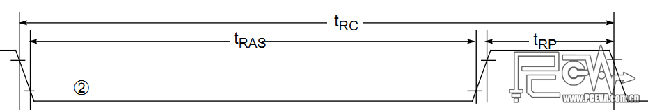
DRAM Row Refresh Cycle Time（tRFC）：行地址刷新周期，
定义了一个bank中行地址刷新所需要的时间。重提一下刷新的含义，由于cell中电容的电荷在MOSFET关闭之后一段时间就会失去，为了维持数据，每隔很短一段时间就需要重新充电。这里多提一句，Intel平台和AMD平台对tRFC的含义不一样，AMD平台的tRFC是DRAM刷新延迟时间，单位是ns，通常有90/110/160/300几个值可以调整，也就是说它的tRFC时钟周期会随着频率的提升而提升；而Intel平台的单位则直接是时钟周期，相反地延迟时间会随着频率的提升而降低。容量大的bank行地址和cell会更多，刷新时间也更长，因此tRFC也要更高。另外，tRFC如果太快会导致数据出错，太慢则影响性能，但可以增加稳定性。
DRAM Refresh Interval（tREFI）：内存刷新时间间隔，
也就是内存的刷新命令生效前要经过的时间。刷新的时间间隔一般取决于内存颗粒的容量（density），容量越大，就越需要频繁刷新，tREFI值就要越低。另外tREFI的时间也会受到内存工作温度与内存电压（Vdimm）影响，因为温度越高电容漏电越快。一般在AMD主板的BIOS里，这个值只有3.9us和7.8us可选，而在SNB平台，则是按时钟周期算，例如DDR3-1333下默认值为5199T，换算过来就是2000/1333x5199=7800ns，也就是7.8us。一般DRAM颗粒的spec中都是规定工作温度大于85度时采用3.9us。
DRAM RAS to RAS Delay（tRRD）：行地址间延迟，
定义的是同一rank不同bank间两个连续激活命令的最短延迟，在DDR3时代一般最小是4T。它的作用和CR有点像，不过比CR更多的时候对性能有较大的影响，所以这个时序可尽量缩小。
DRAM Write Recovery Time（tWR）：内存写入恢复时间，
它定义了内存从写入命令发出（从开始写入算起）到下一次预充电间隔的时间，也就是tRP的前一个操作。如果这个时间设得太短，可能会导致前一次写入未完成就开始下一次预充电，进行寻址，那么前一次写入的数据就会不完整，造成丢数据的情况。这个周期也是第二时序中比较长的，DDR3-2000一般需要10-14个周期，甚至更高。
DRAM Read to Precharge Time（tRTP）：与tWR类似，
定义了同一rank上内存从读取命令发出到tRP之前的间隔时间，但是它在读取完成并且行地址关闭之后才会生效。单颗128MB的内存颗粒可以在DDR3-2000下运行在4到6个时钟周期，如果bank容量增大时，这个时序有可能要放宽。
DRAM Four Active Window（tFAW）：
它定义了同一rank中允许同时发送大于四个行激活命令的间隔时间，因此最小值应该不小于tRRD的四倍。在DDR3上，tRRD的最小值是4T，因此tFAW的最小值就是16T。这个tFAW由于是在一个rank中大于四个bank同时激活之后才生效，因此在内存不是很繁忙的时候，它对性能的影响并不是很大。但是对一些频繁读写内存的操作（例如SuperPI 32M），tFAW对性能的影响可能会加大。由于现在内存用满的几率非常非常小，两根双面的内存更是有4个rank，配合上interleaving，一个rank中同时激活大于四个bank的几率应该不大，所以通常我们把它设为tRRD的四倍应该就不会出问题。
DRAM Write to Read Delay（tWTR）：内存写-读延迟，
它定义的是内存写入命令发出后到下一个读取命令之间的时间间隔，最小为4T，与tRTP类似，提升内存的频率或者容量提升时，这个值需要提高。
结语
看完以上内容，我们已经对时序有了个大致的了解，现在应该可以知道一些时序设置时要注意什么了。比如tFAW要设为tRRD的四倍，tRAS不能设太低等等。还是那句话，内存是辅助CPU超频的，时序设置只是为了放开内存更多的超频空间，时序本身对性能的影响很小，并且随着频率的提升，或者bank数的增加，这种影响可能会进一步减小。具体不同的内存颗粒也会有不同的设置情况，还请大家多关注本站的颗粒汇总以及最新内存颗粒测试报告！